Held-out observed pairs. Supportive/counterexamples are extremes in the frozen direction, one per distinct prompt; random audit uses a seeded hash ordering. Examples are illustrative, not typicality or causal evidence. The CSV is a blank human annotation template.
lip (preferred direction frozen on discovery) supportive A dog
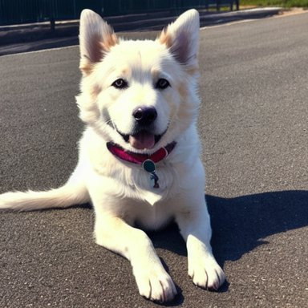
preferred: 0.2682 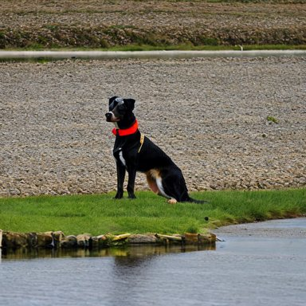
rejected: 0.1872 Preferred − rejected: +0.0810; event pickapic:1100. Unverified.
supportive garden full of beautiful monsteras and anthuriums
preferred: 0.2316 rejected: 0.1691
Preferred − rejected: +0.0626; event pickapic:792. Unverified.
counterexample Anime characters training to become Olympic rowers
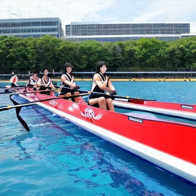
preferred: 0.2139 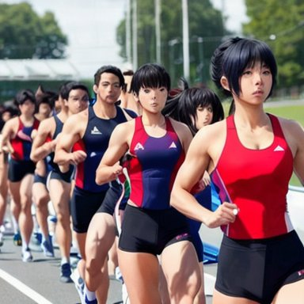
rejected: 0.3050 Preferred − rejected: -0.0911; event pickapic:1665. Unverified.
counterexample Pancake Robot
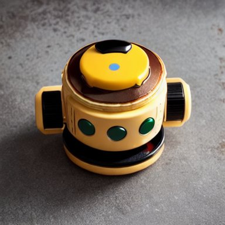
preferred: 0.2274 rejected: 0.3036 Preferred − rejected: -0.0762; event pickapic:1568. Unverified.
random_audit a japanese girl working out in a dress
preferred: 0.2787 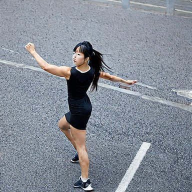
rejected: 0.2760 Preferred − rejected: +0.0026; event pickapic:363. Unverified.
random_audit "Etched in the fading walls of ancient Pompeii, the graffiti stands as a testament to the vibrant life that once pulsed through the streets. Each stroke of the chisel tells a story, a message, a fleeting moment in time, forever captured in the stone. The art may be worn by the sands of time, yet its spirit endures, offering a glimpse into the past and a reminder that, even in the face of destruction, the human spirit can persevere."
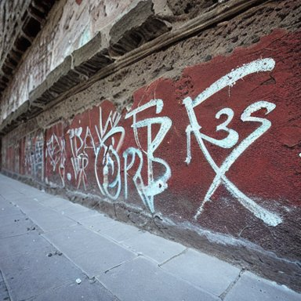
preferred: 0.2156 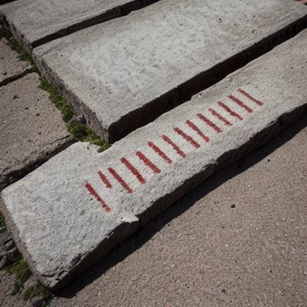
rejected: 0.2204 Preferred − rejected: -0.0047; event pickapic:1763. Unverified.
lip-syncing (preferred direction frozen on discovery) supportive A dog
preferred: 0.2610 rejected: 0.1803
Preferred − rejected: +0.0807; event pickapic:1100. Unverified.
supportive Gay twink with a kangaroo saying hi
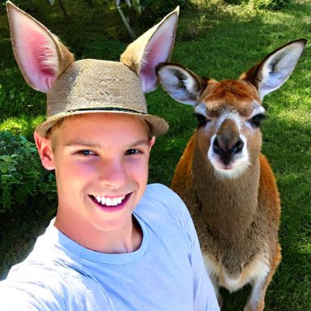
preferred: 0.2961 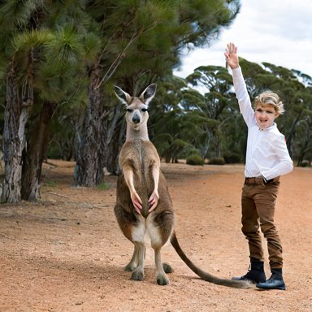
rejected: 0.2287 Preferred − rejected: +0.0674; event pickapic:560. Unverified.
counterexample A lightbulb wearing sunglasses and playing the bagpipes
preferred: 0.2345 rejected: 0.3225
Preferred − rejected: -0.0880; event pickapic:737. Unverified.
counterexample Anime characters training to become Olympic rowers
preferred: 0.2178 rejected: 0.3020
Preferred − rejected: -0.0842; event pickapic:1665. Unverified.
random_audit Fecal object
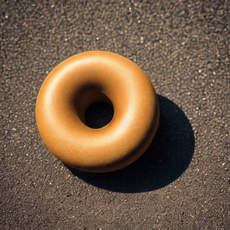
preferred: 0.1993 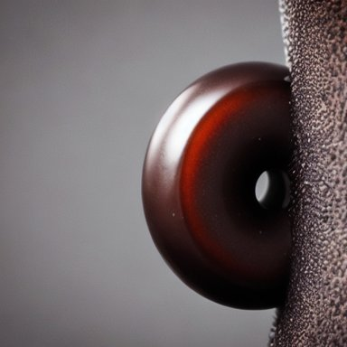
rejected: 0.2333 Preferred − rejected: -0.0340; event pickapic:740. Unverified.
random_audit diorama of a futuristic house made from a nautilus shell
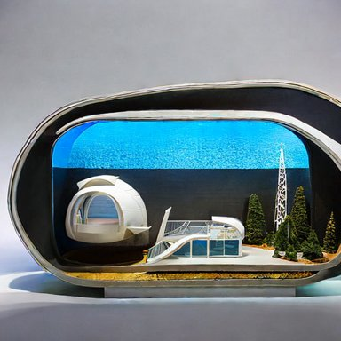
preferred: 0.1864 rejected: 0.1915 Preferred − rejected: -0.0051; event pickapic:249. Unverified.
lip-smacking (preferred direction frozen on discovery) supportive A gorgeous busty blonde milf walking her dog.
preferred: 0.2747 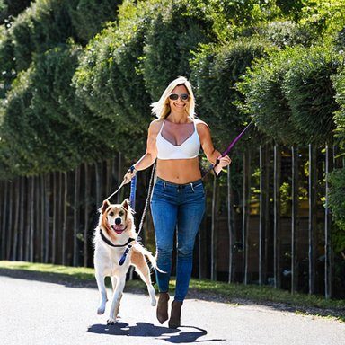
rejected: 0.2146 Preferred − rejected: +0.0601; event pickapic:469. Unverified.
supportive garden full of beautiful monsteras and anthuriums
preferred: 0.2403 rejected: 0.1803
Preferred − rejected: +0.0600; event pickapic:792. Unverified.
counterexample Anime characters training to become Olympic rowers
preferred: 0.2219 rejected: 0.3227
Preferred − rejected: -0.1008; event pickapic:1665. Unverified.
counterexample A deer made of fire
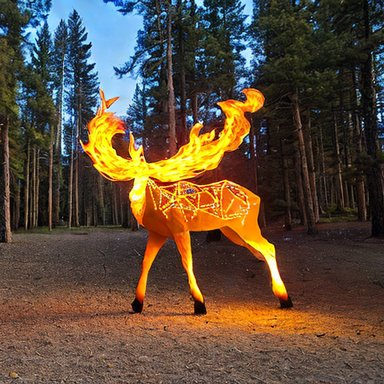
preferred: 0.2319 rejected: 0.3159 Preferred − rejected: -0.0840; event pickapic:1740. Unverified.
random_audit Pancake Robot
preferred: 0.2250 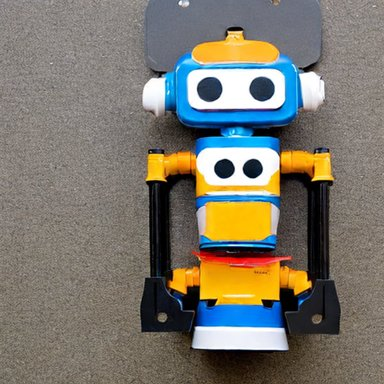
rejected: 0.2326 Preferred − rejected: -0.0076; event pickapic:1569. Unverified.
random_audit decadent chocolate whipped cream strawberry jello unearthly dessert by artist "Judson Huss",by artist "Yerka",by artist "Daniela Uhlig"
preferred: 0.2425 rejected: 0.2434
Preferred − rejected: -0.0009; event pickapic:446. Unverified.
nose (preferred direction frozen on discovery) supportive A dog
preferred: 0.3154 rejected: 0.2347
Preferred − rejected: +0.0808; event pickapic:1100. Unverified.
supportive A gorgeous busty blonde milf walking her dog.
preferred: 0.2723 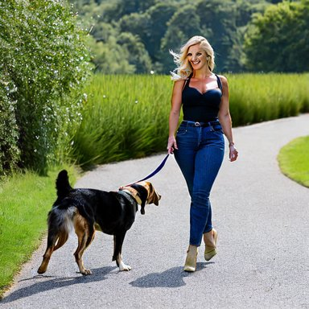
rejected: 0.2191 Preferred − rejected: +0.0532; event pickapic:469. Unverified.
counterexample A deer made of fire
preferred: 0.2216 rejected: 0.3195
Preferred − rejected: -0.0980; event pickapic:1740. Unverified.
counterexample Putin kissing Zelensky
preferred: 0.2702 rejected: 0.3576
Preferred − rejected: -0.0875; event pickapic:756. Unverified.
random_audit Fecal object
preferred: 0.2411 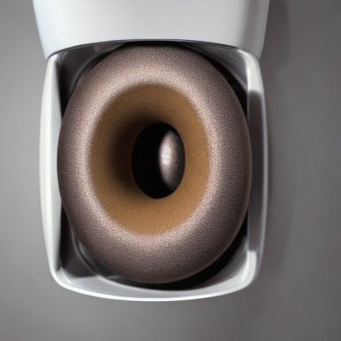
rejected: 0.2480 Preferred − rejected: -0.0070; event pickapic:740. Unverified.
random_audit A gorgeous busty blonde milf walking her dog.
preferred: 0.2723 rejected: 0.2707
Preferred − rejected: +0.0016; event pickapic:467. Unverified.
mouth (preferred direction frozen on discovery) supportive A dog
preferred: 0.2826 rejected: 0.2046
Preferred − rejected: +0.0780; event pickapic:1100. Unverified.
supportive All you need is love
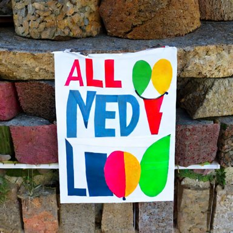
preferred: 0.2853 rejected: 0.2224 Preferred − rejected: +0.0629; event pickapic:488. Unverified.
counterexample car suited for a family of 2 parents and 2 small children so we need a car with a good space inside and a must to be able to diactivate the airbug in front. also i would like a bagage of at least 450 liters with the more the better. I belive a car should be less odor and fuel efficient but those are secondary. would be nice if the car is under 12 seconds to 100kmh and with max speed over 170 km/h. as i am looking for models in years 2015-2018 there is a good chance you can suggest few options. taken all of that in account i would prefer as small as possible car (width and length) and not too expensive. ideas?
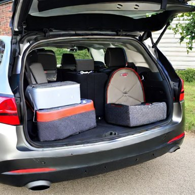
preferred: 0.2063 rejected: 0.3057 Preferred − rejected: -0.0994; event pickapic:1614. Unverified.
counterexample A deer made of fire
preferred: 0.2229 rejected: 0.2964
Preferred − rejected: -0.0734; event pickapic:1740. Unverified.
random_audit Barack Obama drinking a beer on the moon
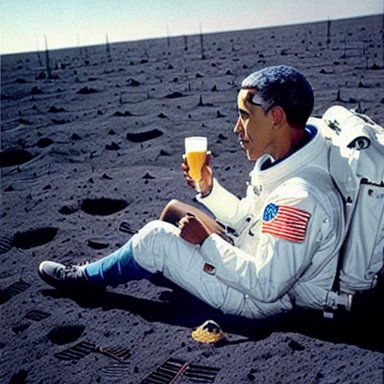
preferred: 0.2759 rejected: 0.2687 Preferred − rejected: +0.0072; event pickapic:685. Unverified.
random_audit A gorgeous busty blonde milf walking her dog.
preferred: 0.2808 rejected: 0.2678
Preferred − rejected: +0.0130; event pickapic:469. Unverified.
nostril (preferred direction frozen on discovery) supportive A dog
preferred: 0.3040 rejected: 0.2057
Preferred − rejected: +0.0983; event pickapic:1100. Unverified.
supportive diorama of a futuristic house made from a nautilus shell
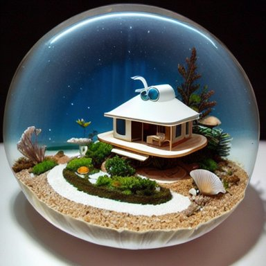
preferred: 0.2524 rejected: 0.1883 Preferred − rejected: +0.0642; event pickapic:251. Unverified.
counterexample A deer made of fire
preferred: 0.2063 rejected: 0.3035
Preferred − rejected: -0.0972; event pickapic:1740. Unverified.
counterexample Putin kissing Zelensky
preferred: 0.2662 rejected: 0.3389
Preferred − rejected: -0.0727; event pickapic:756. Unverified.
random_audit A deer made of fire
preferred: 0.2063 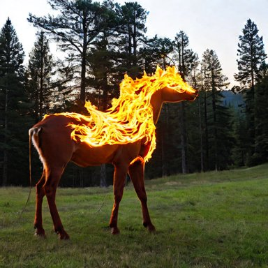
rejected: 0.2433 Preferred − rejected: -0.0370; event pickapic:1740. Unverified.
random_audit A dog
preferred: 0.3040 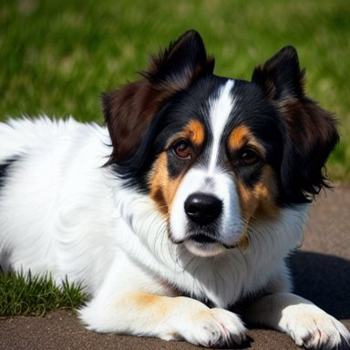
rejected: 0.3094 Preferred − rejected: -0.0053; event pickapic:1100. Unverified.
mouthpart (preferred direction frozen on discovery) supportive A dog
preferred: 0.2919 rejected: 0.2288
Preferred − rejected: +0.0631; event pickapic:1100. Unverified.
supportive a japanese girl working out in a dress
preferred: 0.2787 rejected: 0.2321
Preferred − rejected: +0.0466; event pickapic:363. Unverified.
counterexample A deer made of fire
preferred: 0.2307 rejected: 0.3135
Preferred − rejected: -0.0828; event pickapic:1740. Unverified.
counterexample utopian future
preferred: 0.2100 rejected: 0.2573
Preferred − rejected: -0.0473; event pickapic:1198. Unverified.
random_audit A gorgeous busty blonde milf walking her dog.
preferred: 0.2762 rejected: 0.2308
Preferred − rejected: +0.0454; event pickapic:469. Unverified.
random_audit a japanese girl working out in a dress
preferred: 0.2787 rejected: 0.2646
Preferred − rejected: +0.0141; event pickapic:363. Unverified.
nosebleed (preferred direction frozen on discovery) supportive All you need is love
preferred: 0.2500 rejected: 0.1789
Preferred − rejected: +0.0712; event pickapic:488. Unverified.
supportive A dog
preferred: 0.2899 rejected: 0.2248
Preferred − rejected: +0.0651; event pickapic:1100. Unverified.
counterexample A deer made of fire
preferred: 0.1675 rejected: 0.2686
Preferred − rejected: -0.1011; event pickapic:1740. Unverified.
counterexample Pancake Robot
preferred: 0.2024 rejected: 0.2729
Preferred − rejected: -0.0706; event pickapic:1568. Unverified.
random_audit Gay man with a kangaroo
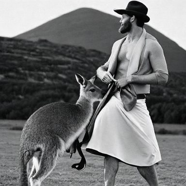
preferred: 0.2798 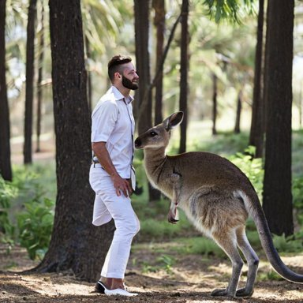
rejected: 0.2749 Preferred − rejected: +0.0049; event pickapic:558. Unverified.
random_audit utopian future
preferred: 0.1617 rejected: 0.1881
Preferred − rejected: -0.0263; event pickapic:1198. Unverified.
lipstick (preferred direction frozen on discovery) supportive A dog
preferred: 0.2468 rejected: 0.1670
Preferred − rejected: +0.0799; event pickapic:1100. Unverified.
supportive Gay twink with a kangaroo saying hi
preferred: 0.2536 rejected: 0.1804
Preferred − rejected: +0.0732; event pickapic:560. Unverified.
counterexample Anime characters training to become Olympic rowers
preferred: 0.1876 rejected: 0.2741
Preferred − rejected: -0.0865; event pickapic:1665. Unverified.
counterexample A dog
preferred: 0.1670 rejected: 0.2518
Preferred − rejected: -0.0848; event pickapic:1099. Unverified.
random_audit Fecal object
preferred: 0.1967 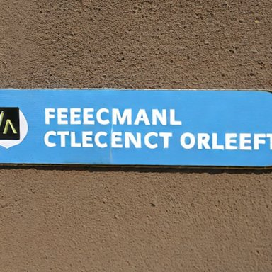
rejected: 0.1734 Preferred − rejected: +0.0233; event pickapic:742. Unverified.
random_audit nice young Lady portrait in night, very low Light, highly detailed, Canon d 60, 50 mm lense
preferred: 0.2847 rejected: 0.3035
Preferred − rejected: -0.0187; event pickapic:1860. Unverified.
mouth-to-mouth (preferred direction frozen on discovery) supportive All you need is love
preferred: 0.2593 rejected: 0.2156
Preferred − rejected: +0.0437; event pickapic:488. Unverified.
supportive A dog
preferred: 0.2826 rejected: 0.2405
Preferred − rejected: +0.0421; event pickapic:1100. Unverified.
counterexample car suited for a family of 2 parents and 2 small children so we need a car with a good space inside and a must to be able to diactivate the airbug in front. also i would like a bagage of at least 450 liters with the more the better. I belive a car should be less odor and fuel efficient but those are secondary. would be nice if the car is under 12 seconds to 100kmh and with max speed over 170 km/h. as i am looking for models in years 2015-2018 there is a good chance you can suggest few options. taken all of that in account i would prefer as small as possible car (width and length) and not too expensive. ideas?
preferred: 0.2127 rejected: 0.3115
Preferred − rejected: -0.0989; event pickapic:1614. Unverified.
counterexample Anime characters training to become Olympic rowers
preferred: 0.2420 rejected: 0.3047
Preferred − rejected: -0.0627; event pickapic:1665. Unverified.
random_audit A dog
preferred: 0.2826 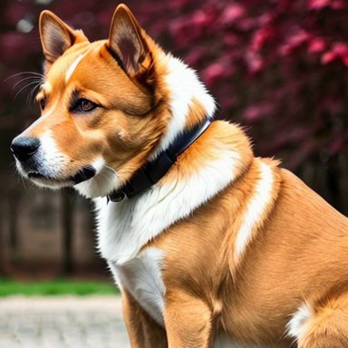
rejected: 0.2486 Preferred − rejected: +0.0340; event pickapic:1100. Unverified.
random_audit Netanyahu versus Lapid in a boxing match
preferred: 0.2546 rejected: 0.2811
Preferred − rejected: -0.0265; event pickapic:746. Unverified.
pavement (rejected direction frozen on discovery) supportive A lightbulb wearing sunglasses and playing the bagpipes
preferred: 0.1906 rejected: 0.3455
Preferred − rejected: -0.1548; event pickapic:737. Unverified.
supportive Anime characters training to become Olympic rowers
preferred: 0.1970 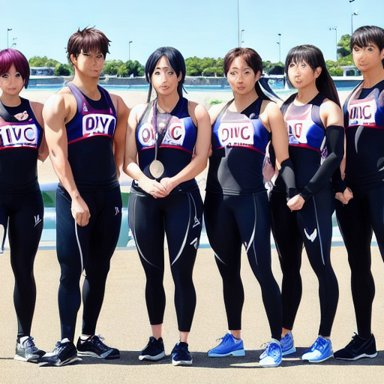
rejected: 0.3392 Preferred − rejected: -0.1422; event pickapic:1665. Unverified.
counterexample Fecal object
preferred: 0.3553 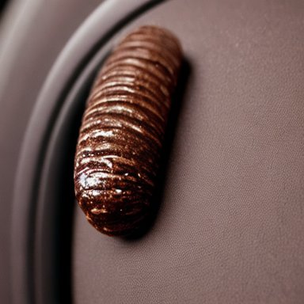
rejected: 0.2339 Preferred − rejected: +0.1214; event pickapic:740. Unverified.
counterexample Pancake Robot
preferred: 0.2721 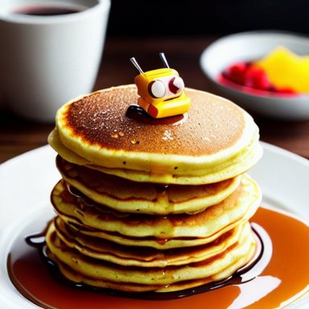
rejected: 0.1712 Preferred − rejected: +0.1009; event pickapic:1568. Unverified.
random_audit Gay man with a kangaroo
preferred: 0.1938 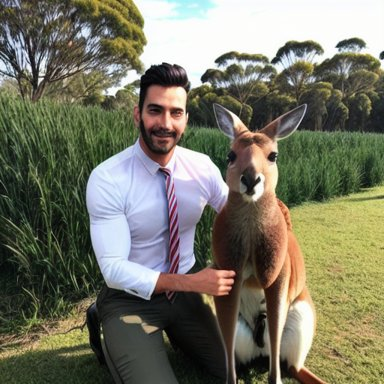
rejected: 0.2401 Preferred − rejected: -0.0463; event pickapic:558. Unverified.
random_audit Anime characters training to become Olympic rowers
preferred: 0.1970 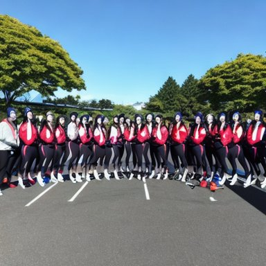
rejected: 0.3270 Preferred − rejected: -0.1301; event pickapic:1665. Unverified.
kickstand (rejected direction frozen on discovery) supportive soul being crushed, digital art
preferred: 0.2063 rejected: 0.3175
Preferred − rejected: -0.1112; event pickapic:1057. Unverified.
supportive Gay twink with a kangaroo saying hi
preferred: 0.2254 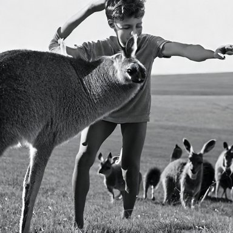
rejected: 0.3136 Preferred − rejected: -0.0882; event pickapic:560. Unverified.
counterexample car suited for a family of 2 parents and 2 small children so we need a car with a good space inside and a must to be able to diactivate the airbug in front. also i would like a bagage of at least 450 liters with the more the better. I belive a car should be less odor and fuel efficient but those are secondary. would be nice if the car is under 12 seconds to 100kmh and with max speed over 170 km/h. as i am looking for models in years 2015-2018 there is a good chance you can suggest few options. taken all of that in account i would prefer as small as possible car (width and length) and not too expensive. ideas?
preferred: 0.3605 rejected: 0.2604
Preferred − rejected: +0.1001; event pickapic:1614. Unverified.
counterexample All you need is love
preferred: 0.3267 rejected: 0.2357
Preferred − rejected: +0.0910; event pickapic:488. Unverified.
random_audit garden full of beautiful monsteras and anthuriums
preferred: 0.2611 rejected: 0.2578
Preferred − rejected: +0.0033; event pickapic:792. Unverified.
random_audit "Etched in the fading walls of ancient Pompeii, the graffiti stands as a testament to the vibrant life that once pulsed through the streets. Each stroke of the chisel tells a story, a message, a fleeting moment in time, forever captured in the stone. The art may be worn by the sands of time, yet its spirit endures, offering a glimpse into the past and a reminder that, even in the face of destruction, the human spirit can persevere."
preferred: 0.2852 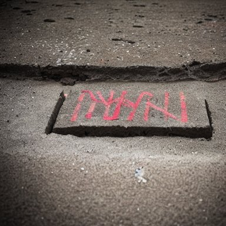
rejected: 0.3428 Preferred − rejected: -0.0576; event pickapic:1763. Unverified.
driveway (rejected direction frozen on discovery) supportive Gay man with a kangaroo
preferred: 0.1944 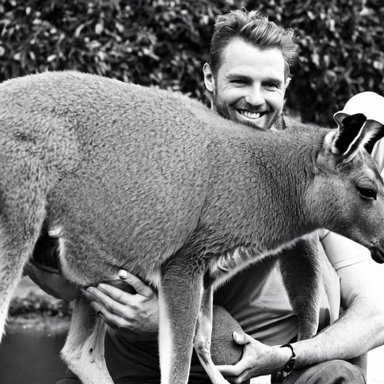
rejected: 0.3398 Preferred − rejected: -0.1454; event pickapic:558. Unverified.
supportive Anime characters training to become Olympic rowers
preferred: 0.1738 rejected: 0.3103
Preferred − rejected: -0.1365; event pickapic:1665. Unverified.
counterexample Fecal object
preferred: 0.3318 rejected: 0.1781
Preferred − rejected: +0.1538; event pickapic:740. Unverified.
counterexample A deer made of fire
preferred: 0.3163 rejected: 0.2095
Preferred − rejected: +0.1068; event pickapic:1740. Unverified.
random_audit Fecal object
preferred: 0.3318 rejected: 0.1781
Preferred − rejected: +0.1538; event pickapic:740. Unverified.
random_audit Putin kissing Zelensky
preferred: 0.1885 rejected: 0.3096
Preferred − rejected: -0.1211; event pickapic:756. Unverified.
sidewalk (rejected direction frozen on discovery) supportive Gay man with a kangaroo
preferred: 0.1856 rejected: 0.3452
Preferred − rejected: -0.1596; event pickapic:558. Unverified.
supportive soul being crushed, digital art
preferred: 0.1827 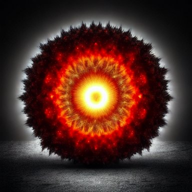
rejected: 0.2928 Preferred − rejected: -0.1101; event pickapic:1057. Unverified.
counterexample a japanese girl working out in a dress
preferred: 0.3445 rejected: 0.2261
Preferred − rejected: +0.1184; event pickapic:363. Unverified.
counterexample "Etched in the fading walls of ancient Pompeii, the graffiti stands as a testament to the vibrant life that once pulsed through the streets. Each stroke of the chisel tells a story, a message, a fleeting moment in time, forever captured in the stone. The art may be worn by the sands of time, yet its spirit endures, offering a glimpse into the past and a reminder that, even in the face of destruction, the human spirit can persevere."
preferred: 0.3845 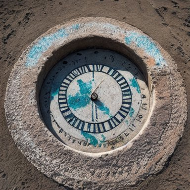
rejected: 0.2718 Preferred − rejected: +0.1127; event pickapic:1763. Unverified.
random_audit utopian future
preferred: 0.2629 rejected: 0.2672
Preferred − rejected: -0.0043; event pickapic:1198. Unverified.
random_audit garden full of beautiful monsteras and anthuriums
preferred: 0.2838 rejected: 0.3228
Preferred − rejected: -0.0390; event pickapic:792. Unverified.
doormat (rejected direction frozen on discovery) supportive A dog
preferred: 0.2236 rejected: 0.3069
Preferred − rejected: -0.0833; event pickapic:1100. Unverified.
supportive A lightbulb wearing sunglasses and playing the bagpipes
preferred: 0.1895 rejected: 0.2562
Preferred − rejected: -0.0668; event pickapic:737. Unverified.
counterexample car suited for a family of 2 parents and 2 small children so we need a car with a good space inside and a must to be able to diactivate the airbug in front. also i would like a bagage of at least 450 liters with the more the better. I belive a car should be less odor and fuel efficient but those are secondary. would be nice if the car is under 12 seconds to 100kmh and with max speed over 170 km/h. as i am looking for models in years 2015-2018 there is a good chance you can suggest few options. taken all of that in account i would prefer as small as possible car (width and length) and not too expensive. ideas?
preferred: 0.2908 rejected: 0.2126
Preferred − rejected: +0.0782; event pickapic:1614. Unverified.
counterexample A gorgeous busty blonde milf walking her dog.
preferred: 0.2504 rejected: 0.1849
Preferred − rejected: +0.0655; event pickapic:467. Unverified.
random_audit Barack Obama drinking a beer on the moon
preferred: 0.2416 rejected: 0.2060
Preferred − rejected: +0.0356; event pickapic:685. Unverified.
random_audit Anime characters training to become Olympic rowers
preferred: 0.1791 rejected: 0.2249
Preferred − rejected: -0.0459; event pickapic:1665. Unverified.
carpeting (rejected direction frozen on discovery) supportive All you need is love
preferred: 0.2080 rejected: 0.3038
Preferred − rejected: -0.0958; event pickapic:488. Unverified.
supportive Pancake Robot
preferred: 0.2524 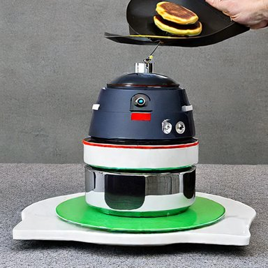
rejected: 0.3260 Preferred − rejected: -0.0735; event pickapic:1569. Unverified.
counterexample Pancake Robot
preferred: 0.2524 rejected: 0.1562
Preferred − rejected: +0.0962; event pickapic:1568. Unverified.
counterexample diorama of a futuristic house made from a nautilus shell
preferred: 0.2862 rejected: 0.2160
Preferred − rejected: +0.0702; event pickapic:249. Unverified.
random_audit decadent chocolate whipped cream strawberry jello unearthly dessert by artist "Judson Huss",by artist "Yerka",by artist "Daniela Uhlig"
preferred: 0.2485 rejected: 0.2201
Preferred − rejected: +0.0284; event pickapic:445. Unverified.
random_audit diorama of a futuristic house made from a nautilus shell
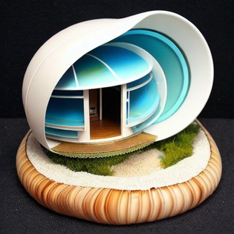
preferred: 0.2819 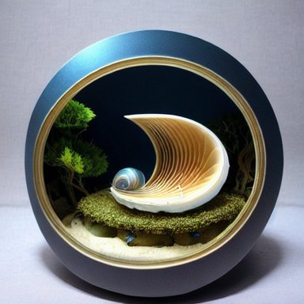
rejected: 0.2824 Preferred − rejected: -0.0006; event pickapic:252. Unverified.
carpet (rejected direction frozen on discovery) supportive All you need is love
preferred: 0.2299 rejected: 0.3272
Preferred − rejected: -0.0973; event pickapic:488. Unverified.
supportive an impressive scene from the broadway stage production of "The Bad Touch" by Bloodhound Gang
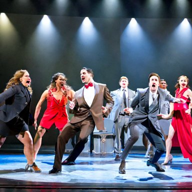
preferred: 0.2232 rejected: 0.3095 Preferred − rejected: -0.0863; event pickapic:1589. Unverified.
counterexample Pancake Robot
preferred: 0.2638 rejected: 0.1770
Preferred − rejected: +0.0868; event pickapic:1568. Unverified.
counterexample Stunning Lavish apartment interior design, marble floor, High ceilings, High glass windows, art deco, photorealistic, cinematic lighting
preferred: 0.3199 rejected: 0.2374
Preferred − rejected: +0.0825; event pickapic:1712. Unverified.
random_audit Sunset looking over Arctic tundra grassland
preferred: 0.2202 rejected: 0.2048
Preferred − rejected: +0.0154; event pickapic:1187. Unverified.
random_audit Putin kissing Zelensky
preferred: 0.2016 rejected: 0.2204
Preferred − rejected: -0.0188; event pickapic:756. Unverified.
carpeted (rejected direction frozen on discovery) supportive All you need is love
preferred: 0.2186 rejected: 0.3120
Preferred − rejected: -0.0934; event pickapic:488. Unverified.
supportive Putin kissing Zelensky
preferred: 0.1951 rejected: 0.2722
Preferred − rejected: -0.0771; event pickapic:756. Unverified.
counterexample Pancake Robot
preferred: 0.2717 rejected: 0.1813
Preferred − rejected: +0.0904; event pickapic:1568. Unverified.
counterexample Stunning Lavish apartment interior design, marble floor, High ceilings, High glass windows, art deco, photorealistic, cinematic lighting
preferred: 0.3091 rejected: 0.2221
Preferred − rejected: +0.0870; event pickapic:1712. Unverified.
random_audit Anime characters training to become Olympic rowers
preferred: 0.2002 rejected: 0.1889
Preferred − rejected: +0.0114; event pickapic:1665. Unverified.
random_audit diorama of a futuristic house made from a nautilus shell
preferred: 0.3001 rejected: 0.3148
Preferred − rejected: -0.0147; event pickapic:252. Unverified.
bollard (rejected direction frozen on discovery) supportive Netanyahu versus Lapid in a boxing match
preferred: 0.2292 rejected: 0.3286
Preferred − rejected: -0.0994; event pickapic:749. Unverified.
supportive soul being crushed, digital art
preferred: 0.1926 rejected: 0.2897
Preferred − rejected: -0.0971; event pickapic:1057. Unverified.
counterexample A cursed soldier. Greg rutkowski
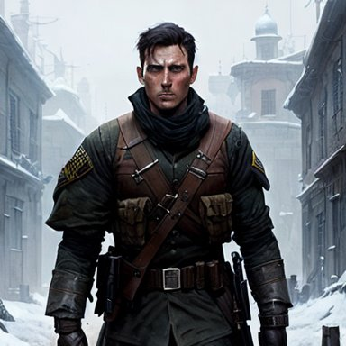
preferred: 0.3930 rejected: 0.2434 Preferred − rejected: +0.1497; event pickapic:1687. Unverified.
counterexample A gorgeous busty blonde milf walking her dog.
preferred: 0.3347 rejected: 0.2315
Preferred − rejected: +0.1032; event pickapic:469. Unverified.
random_audit Sunset looking over Arctic tundra grassland
preferred: 0.2491 rejected: 0.2545
Preferred − rejected: -0.0054; event pickapic:1189. Unverified.
random_audit A perfect young woman, inspired by ghibli studio, eating instant noodles in a restaurant.
preferred: 0.2735 rejected: 0.2372
Preferred − rejected: +0.0363; event pickapic:1277. Unverified.
paved (rejected direction frozen on discovery) supportive Putin kissing Zelensky
preferred: 0.2031 rejected: 0.3394
Preferred − rejected: -0.1363; event pickapic:756. Unverified.
supportive A lightbulb wearing sunglasses and playing the bagpipes
preferred: 0.1888 rejected: 0.3194
Preferred − rejected: -0.1306; event pickapic:737. Unverified.
counterexample Fecal object
preferred: 0.3395 rejected: 0.2230
Preferred − rejected: +0.1165; event pickapic:740. Unverified.
counterexample Seattle in the year 2100
preferred: 0.3516 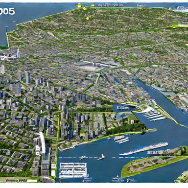
rejected: 0.2383 Preferred − rejected: +0.1133; event pickapic:1186. Unverified.
random_audit Pancake Robot
preferred: 0.2631 rejected: 0.1797
Preferred − rejected: +0.0834; event pickapic:1568. Unverified.
random_audit A dog
preferred: 0.3568 rejected: 0.2980
Preferred − rejected: +0.0588; event pickapic:1100. Unverified.